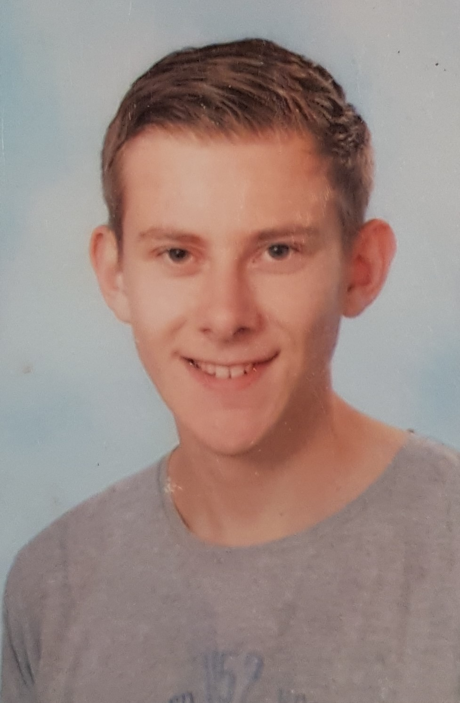

Max Koning

Leerlingnummer: 2112827
Emailadres: maxkoning@casema.nl
Klas: 23IVT1C
Gemaakt voor de eindopdracht van webdesign en studeren op het HBO.
Deze opdracht is gemaakt voor de opleiding informatica.
Ik ben Max Koning (1998) en ik doe studie Informatica op het AVANS in Breda. Ik wist toen ik in de 3e zat al dat ik de studie Informatica wilde gaan volgen. Ik heb altijd al wel iets gehad met computers, maar dit waren vooral problemen oplossen in de hardware en software. Ik wilde wel altijd al weten hoe ik zelf programma’s moest maken en hoe ik websites kon maken. HTML en CSS heb al ervaring mee. Ik vind het leuk mensen te kunnen helpen en in de Informatica kan ik dit goed doen. Dit kan bijvoorbeeld doormiddel van websites maken.